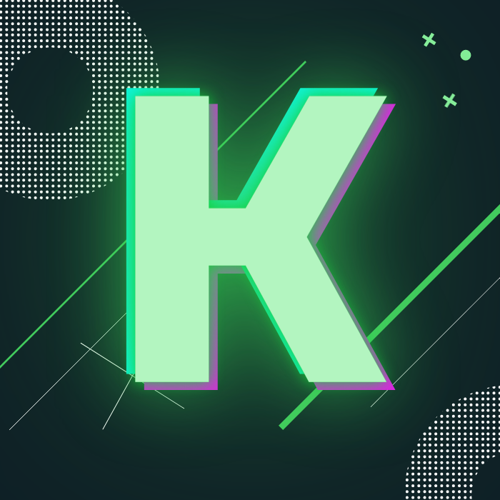

Bueno esto es lo que sera la cabecera de mi paginilla web bb, gozalo
Pues aprendi que se usa p para hacer parrafos
Otra cosa importante es que strong es para poner las vainas en negrilla y em es para poner las cosillas en negrilla
Entonces puedo escribir cosas como: Achoche y Reborno son personicas muy especiales y que tueve el placer de cnocer hace 1 año como pasa el tiempo
Bueno realmente esto que aprend era parte de la tarea jeje, lo importante es que aprendi a hacer istas, de todo tiempo
Por ejemplo:
Este solo es un avance chikito, pero merece estar en la bitacora
Son algunas cositas sobre las listas que no hice antes
Por ejemplo:
Se pueden combinar atributos
Aqui combino reversed y type
Y aqui voy a poner una lista de definiciones donde hay varias definiciones
La verdad, no voy a mentir, en este parte me gustaria hablar sobre todas las posibilidades de enlaces, no obstante no estoy muy segura de que lo haya logrado comprender a la perfección, sin embargo aquí va
Intento de enlazar elementos:
Este es el enlace para otro documento
Este un enlace para una parte especifica de otro documento
Este un enlace a una web (Twitch)
Este un enlace a un directorio
Este un enlace a una imagen Creo que este va a salir mal
Este un enlace a un archivo de sonido Creo que este va a salir mal X2
Este creo que es un enlace al capitulazo 1
Enlace para ir arriba del documento
Como dato a la bitacora, debo decir que todo ha ido super bien :´)
Como siguiente Voy con los enlaces un poquitin mas complejos
Vamoh a darle:
Aprovechando que mi logo esta muy bien hecho en full HD, tambien use los atributos para dar un tamaño normal a la imagen
Enlace para descargar un fichero
Descargar imagenes de mis redesTambien se puede para FTP,pero no conzoco asi que vamoh a hacerle con malito (Correo)
Para que me escribas un correo wapo ;)A este de aca arriba tambien se le pueden hacer modificaciones, para poner el asunto wo a intentar
Para que me escribas un correo wapo ;)Los últimos 2 enlaces fueron un fail, pero para ser la primera vez, buah, ya aprendere
Weno pos esto solo es para probar git asi que pondre solo este texto como extra
{kind=link}